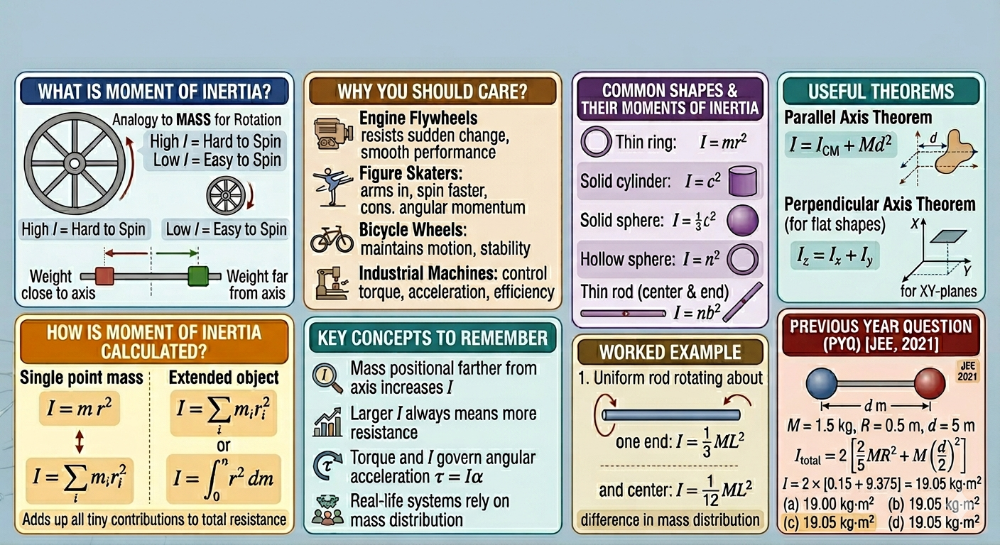

Moment of Inertia

Image generated by Google AI
Moment of Inertia
Imagine that you are at a playground, and there is a giant wheel just waiting to be spun. You give it a push, but sometimes it spins easily, and other times it seems almost impossible to budge. Ever wondered why?
Well, the answer lies in a fascinating concept called moment of inertia. It’s the property that tells us how much an object resists spinning. In simple terms, it’s rotational “mass.” Just like pushing a heavy box is harder than pushing a light one, spinning something with a large moment of inertia is harder than spinning something with a small one.
Here are some key points to keep in mind:
- Moment of inertia tells us how hard it is to start or stop spinning.
- It depends on two main factors: how heavy the object is, and how far the mass is from the axis of rotation.
- If the mass is farther from the axis, the object is harder to spin.
- If the mass is closer to the axis, it spins more easily.
Think about opening a door. Push near the hinge (the axis), and it barely moves. Push at the edge, and it swings wide open. That is because applying force farther from the axis gives more torque. In rotational physics terms, torque (\( \tau \)) is the product of force and lever arm distance (\( r \)), \( \tau = r F \).
Similarly, when mass is distributed farther from the center of rotation, the object resists spinning more. This resistance is exactly what the moment of inertia quantifies.
So, in short: moment of inertia is how much something resists spinning, depending on both mass and its distribution relative to the axis.
How Is Moment of Inertia Calculated?
Let us demystify the calculation:
- For a single point mass:
\[ I = m r^2 \]
where \( m \) is the mass, and \( r \) is its distance from the axis of rotation. Notice the quadratic dependence on \( r \), doubling the distance quadruples the contribution to \( I \). That’s why distributing mass farther out dramatically increases resistance to rotation.
- For an extended object, break it into tiny elements and sum their contributions:
\[ I = \sum_i m_i r_i^2 \]
Or, in the continuous limit using calculus:
\[ I = \int r^2 \, dm \]
This integral essentially “adds up” all tiny pieces, each weighted by the square of its distance from the rotation axis. A subtle insight here: for irregular objects, symmetry can simplify this integral significantly by canceling out contributions along certain axes.
Why Should You Care?
- Engine flywheels: These are designed to resist sudden speed changes. Their large moment of inertia stores rotational energy and ensures smooth operation.
- Figure skaters: When skaters pull their arms in, their moment of inertia decreases, so angular velocity increases to conserve angular momentum \( L = I \omega \).
- Bicycle wheels: Larger wheels have higher moment of inertia, making forward motion smoother and balance easier once rolling.
- Industrial machines: Engineers design turbines, washing machines, and motors considering moment of inertia to optimize torque, acceleration, and energy efficiency.
Moment of inertia also appears in Newton’s second law for rotation:
\[ \tau = I \alpha \]
where \( \tau \) is torque, \( I \) is moment of inertia, and \( \alpha \) is angular acceleration. This mirrors \( F = ma \) in linear motion but applies to rotations.
Subtle observation: just like mass stores linear kinetic energy, \( I \) stores rotational kinetic energy, \( K = \tfrac{1}{2} I \omega^2 \). So a flywheel is essentially a rotational energy reservoir.
Common Shapes and Their Moments of Inertia
- Thin ring about its central axis:
- Disc or solid cylinder through center:
- Thin rod:
- About center: \( I = \tfrac{1}{12} ML^2 \)
- About one end: \( I = \tfrac{1}{3} ML^2 \)
- Solid sphere through its diameter:
- Hollow sphere through its diameter:
\[ I = MR^2 \]
\[ I = \tfrac{1}{2} MR^2 \]
\[ I = \tfrac{2}{5} MR^2 \]
\[ I = \tfrac{2}{3} MR^2 \]
Knowing these formulas is a huge time-saver. Subtle note: these formulas arise from integrating \( r^2 \, dm \) over the volume, often simplified using symmetry arguments, which highlights the beauty of physics in connecting geometry and mass distribution.
Useful Theorems
- Parallel Axis Theorem
- Perpendicular Axis Theorem (for flat objects in XY-plane)
If you know the moment of inertia about the center of mass, and want it about a parallel axis:
\[ I = I_{\text{CM}} + M d^2 \]
where \( d \) is the distance between axes. Very handy for rods, beams, and components offset from rotation axes.
For discs, plates, or other planar shapes:
\[ I_z = I_x + I_y \]
where \( I_z \) is about the axis perpendicular to the plane. This theorem arises from decomposing the mass distribution into orthogonal directions—a neat example of vector calculus in physics.
Worked Example
Consider a uniform rod, 1 m long and 2 kg, rotating about one end:
\[ I = \tfrac{1}{3} ML^2 = \tfrac{1}{3} \times 2 \times 1^2 = \tfrac{2}{3} \text{ kg·m}^2 \]
Now, if the same rod spins about its center:
\[ I = \tfrac{1}{12} \times 2 \times 1^2 = \tfrac{1}{6} \text{ kg·m}^2 \]
Notice the difference: rotating about the end places more mass farther from the axis, increasing \( I \). This also shows how torque and angular acceleration are intimately linked through mass distribution.
Key Insights to Remember
- Mass farther from the axis increases moment of inertia, making rotation more difficult.
- Larger moment of inertia means greater resistance to changes in rotational motion.
- Torque and moment of inertia together determine angular acceleration: \( \tau = I\alpha \).
- Remembering standard formulas for common shapes saves computation time.
- Real-world systems—from doors to flywheels—rely on mass distribution for efficiency and control.
- Visualizing examples like spinning doors, skaters, and wheels makes the concept intuitive.
Previous Year Questions (PYQs)
Q1.
A system consists of two identical spheres each of mass 1.5 kg and radius 50 cm at the end of a light rod. The distance between the centres of the two spheres is 5 m. What will be the moment of inertia of the system about an axis perpendicular to the rod passing through its mid-point?
[JEE, 2021]
- 18.75 kg·m²
- 1.905 × 10⁵ kg·m²
- 19.05 kg·m²
- 1.875 × 10⁵ kg·m²
Solution:
- Moment of inertia of a sphere: \( I_{\text{sphere}} = \frac{2}{5}MR^2 \)
- Using the parallel axis theorem:
\[ I_{\text{total}} = \frac{2}{5}MR^2 + M\left(\frac{d}{2}\right)^2 \]
Given:
\[ M = 1.5\,\text{kg}, \quad R = 0.5\,\text{m}, \quad d = 5\,\text{m} \]
For each sphere:
\[ I = \frac{2}{5}(1.5)(0.5)^2 + 1.5\left(\frac{5}{2}\right)^2 = \frac{2}{5}(1.5)(0.25) + 1.5(6.25) = 0.15 + 9.375 = 9.525\,\text{kg·m}^2 \]
Since there are two identical spheres:
\[ I_{\text{total}} = 2 \times 9.525 = 19.05\,\text{kg}\cdot\text{m}^2 \]
Answer: \( \boxed{\text{c) 19.05 kg·m}^2} \)